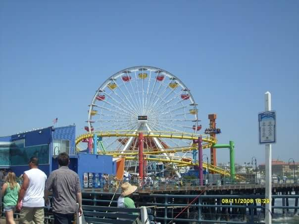
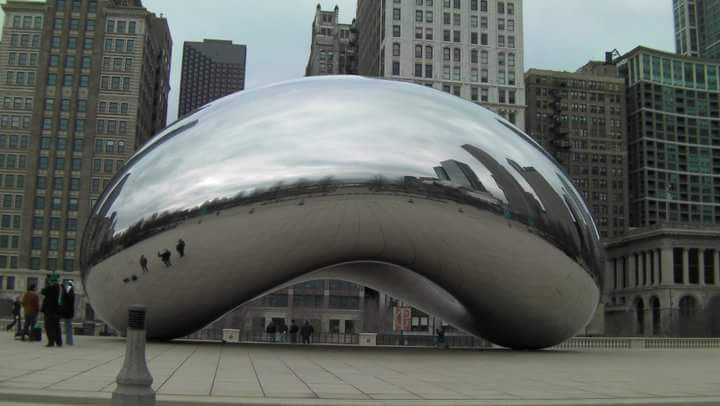
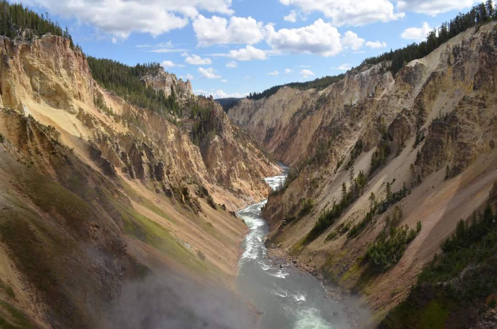
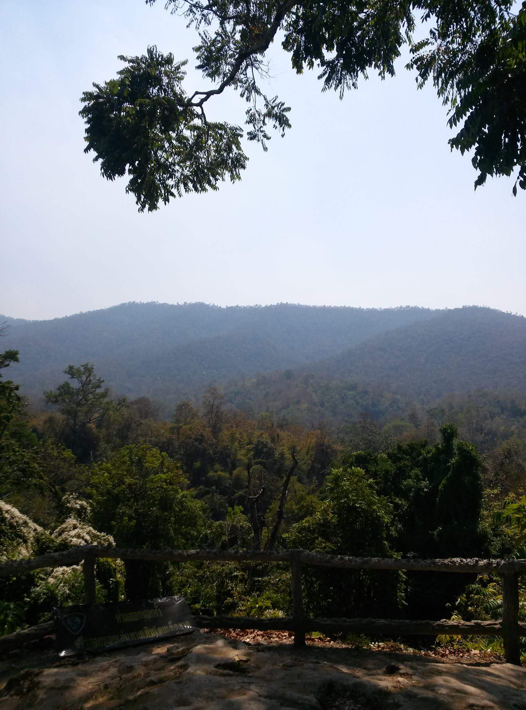
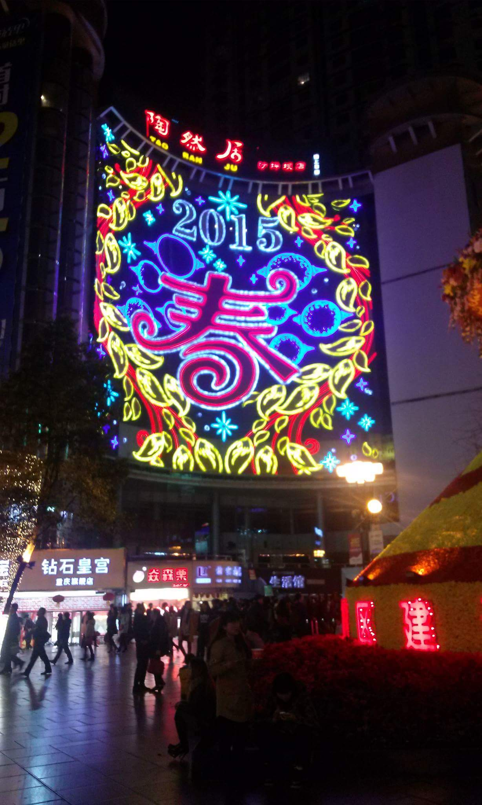
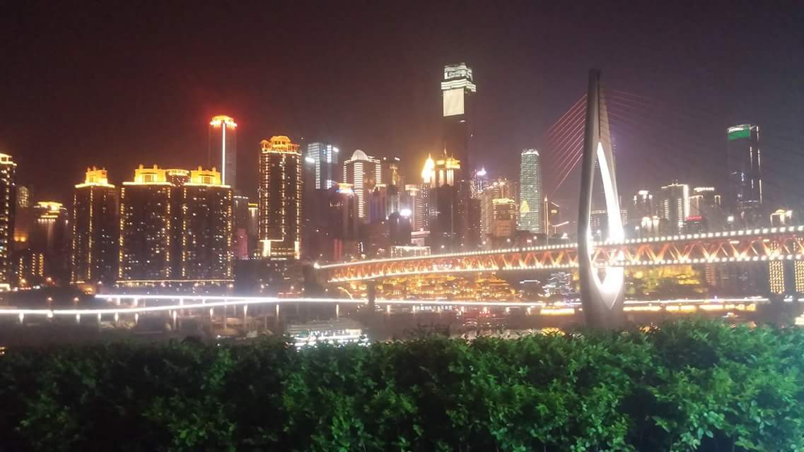

Doing Some Vacationing
I love to vacation, but then again, who doesn't?
Here are a few of the vacations I have taken, and one I will take soon!
I love to vacation, but then again, who doesn't?
Here are a few of the vacations I have taken, and one I will take soon!
I had my very first vacation around my 16th birthday. It was my first time taking an airplane and my first time out of the midwestand I was headed to the infamous city of Los Angeles.
My family and I traveled to LA on a couple of other occasions, falling on my 17th and 18th birthdays. It was a popular place for my family to travel to during those times.
After high school, I took a couple of weekend trips via bus to Chicago.
One of my favorite places I've traveled to in the U.S. is Yellowstone. It is quite a beautiful site. I really enjoyed spending all of my time outdoors camping, hiking, and viewing all the natural phenominons that exist there.
Being busy with work and school, I did not travel much until some time after I graduated college. This time, I was headed out of the country to Thailand. My brother lives in the city of Chaing Mai, Thailand and I went to visit him and his family as well as get my first glipse of the world outside of the U.S.
The next year I found myself having the opportunity to travel to Chongqing, China around Chinese New Year. Chongqing (pronounced Chóngqìng) is a rather large city in southwest China that, surprisingly, not many people (even myself prior) have heard of.
I went back to Chongqing again the next year.
This month I am headed yet again to China to visit those I have come to know and see more of the country I have not yet had a chance to explore. I will spend some time in Beijing, Chongqing, and Chengdu.